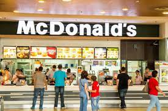
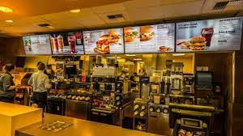

MACDONALD
The first McDonald's restaurant was started in 1948 by brothers Maurice (“Mac”) and Richard McDonald in San Bernardino, California. They bought appliances for their small hamburger restaurant from salesman Ray Kroc, who was intrigued by their need for eight malt and shake mixers.
What Is the Most Popular Fast-Food Restaurant in the United States? McDonald's is by far the most popular restaurant in terms of fast-food sales. For the past five years, the Golden Arches has consistently recorded more than $35 billion in sales across all of its franchises..